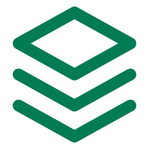

Advies van het bureau, anderhalf jaar geleden
Toetstermen aanpassen
Docenten meenemen
Al bekend.
Wat PHOV wil
AI in het vak
met een pragmatische
partner ernaast
Open boek
tentamens behouden,
met AI-detectie

Curriculum
verder ontwikkelen

1